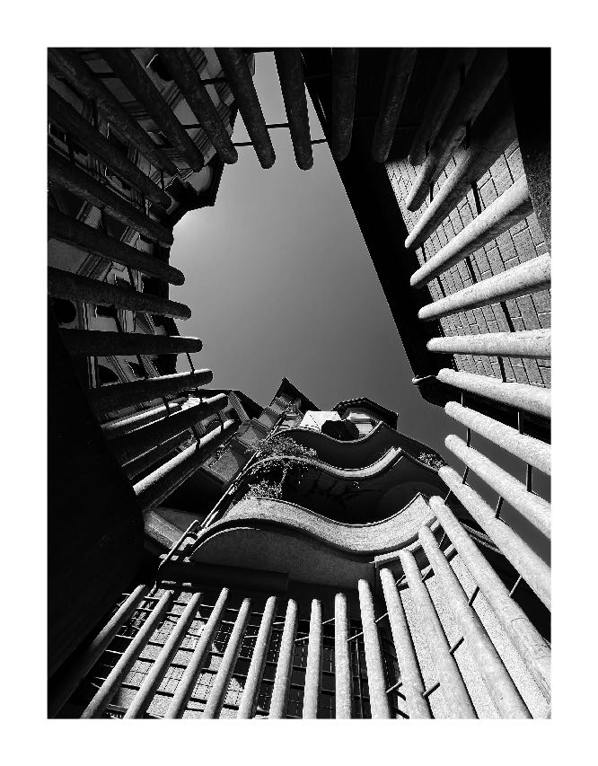
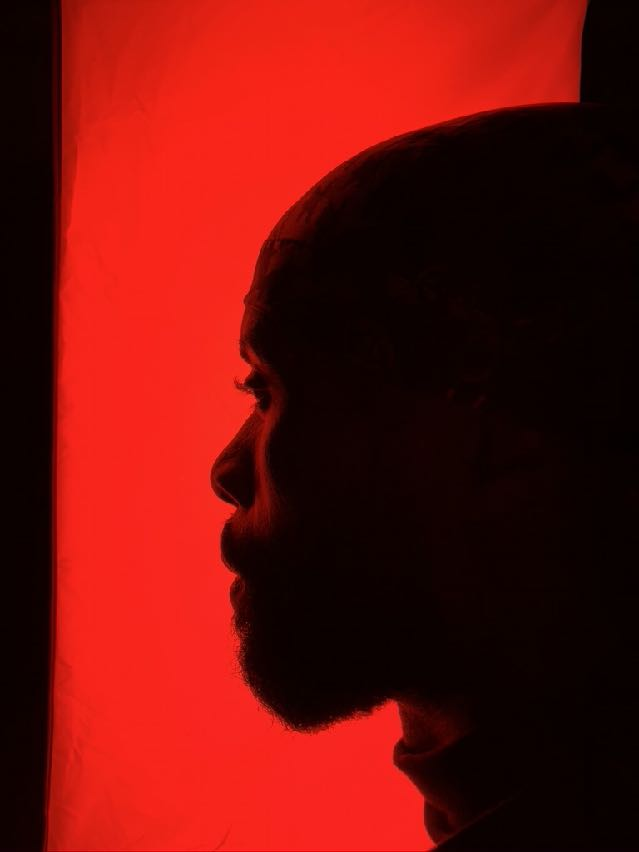

Art / Current photographic project
GOOD
MORNING
WORLD
Architecture, public space and the quiet theatre of people moving through the city. A photographic practice by Ben Taleb.

01 / Selected works
Observe first.
Then frame.
A study of rhythm, distance, reflection and human presence.




02 / Edition 001
One image.
Three sizes.
Looking Up is an unframed, numbered fine-art photograph on Hahnemühle Photo Rag 308 gsm. The edition is limited to 100 prints total across all sizes.
30 × 40 cmCHF 200
45 × 60 cmCHF 300
60 × 80 cmCHF 600